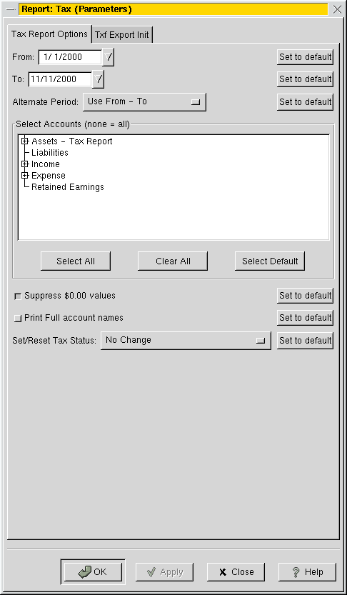

Tax Report

This report allows you to view all tax related Income and Expenses.
Up to fifteen sub-accounts are displayed. Lower sub-accounts are ignored.
NOTE: For this to work, the user has to segregate taxable and
not taxable income to different accounts, as well as deductible
and non deductible expenses. The user also must Set the Tax Status
of each tax related account. The "Set/Reset Tax Status:"
parameter does this. There is a taxreport.xac file in the examples
directory, which shows one way this can be set up.

Parameters for this report include:
- The start and end dates - default: Year-to-Date.
- Alternate Period: (Year is relative to From:)
- Use From - To (default)
- 1st, 2nd, 3rd, 4th Estimated Tax Quarters (From: year)
- Last Year (year before From: year)
- 1st, 2nd, 3rd, 4th Estimated Tax Quarters for Last Year
- The accounts for which the report is to be produced. If no
account is selected, all tax related accounts are displayed. Non-tax
related accounts are not displaied, even if selected, though tax
related sub-accounts will be displaied.
- Suppress $0.00 values
- Display Full account names
- Set/Reset Tax Status of selected accounts. (No op is none selected)
- No Change (default)
- Set Tax Related
- Reset Tax Related
- Set Tax Related & sub-accounts
- Reset Tax Related & sub-accounts
I plan to add export capability to TaxCut and TurboTax, as soon
as I can get a hold of the spec for .txf files.
Return to Main Documentation Page.